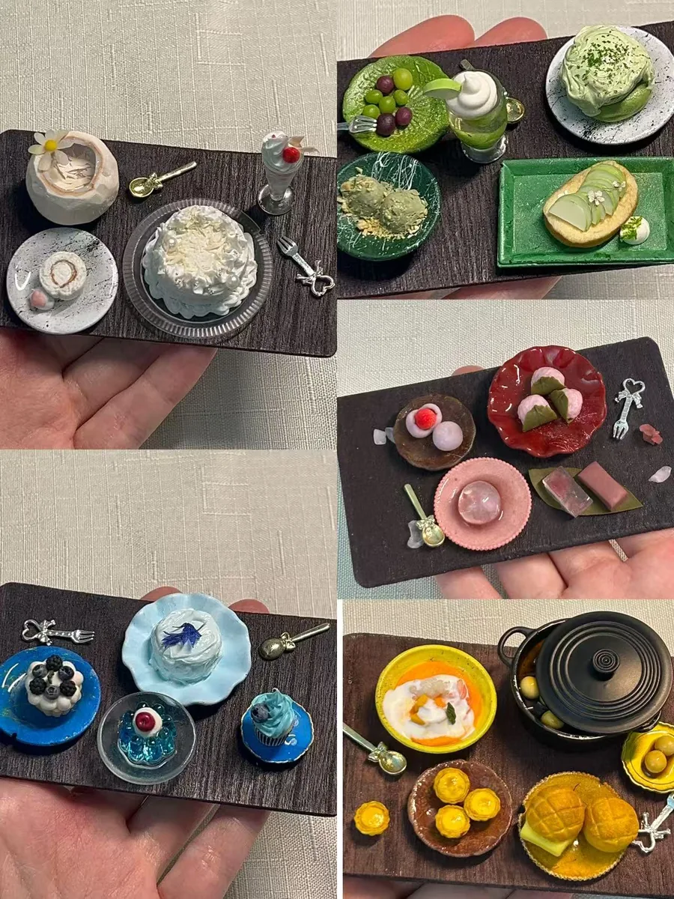
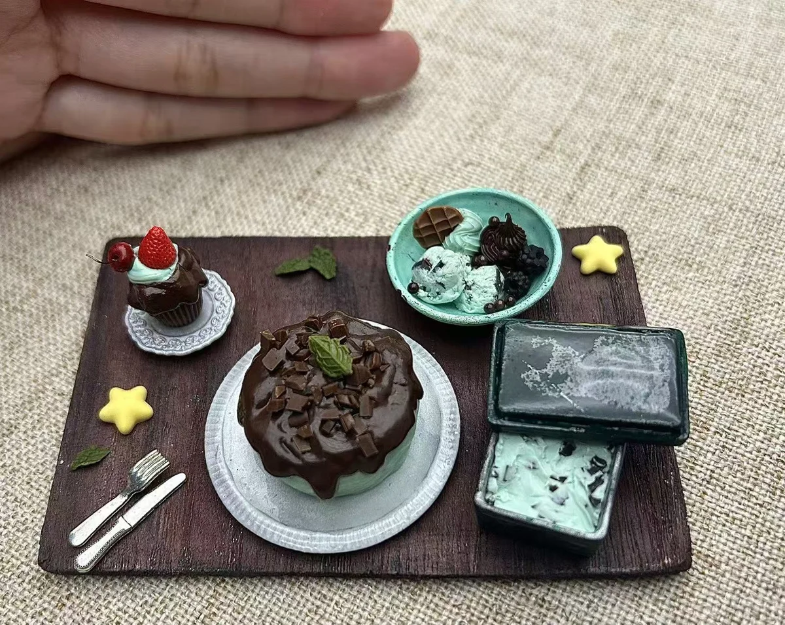
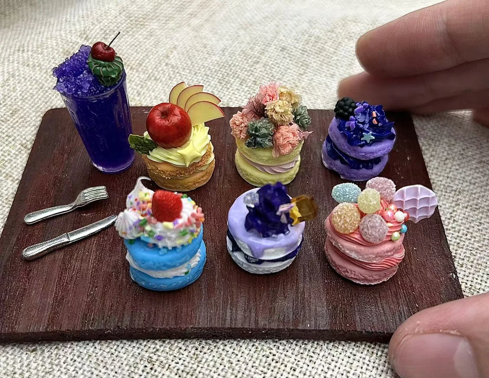
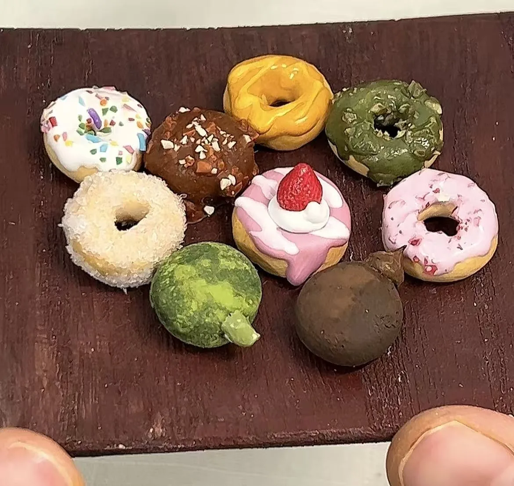
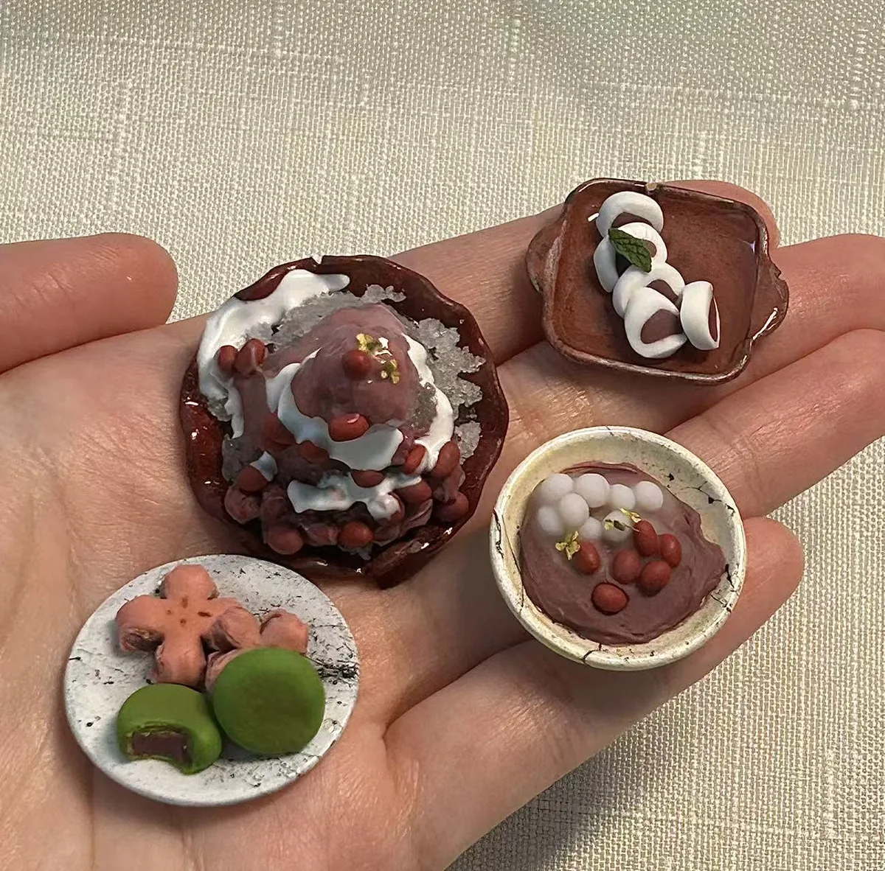
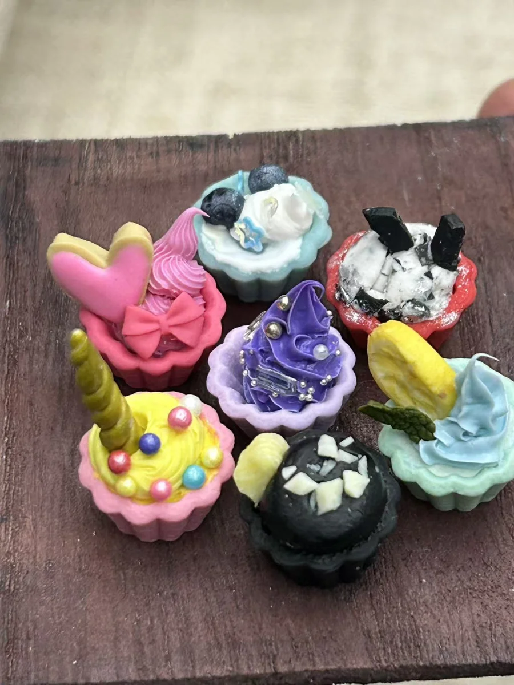
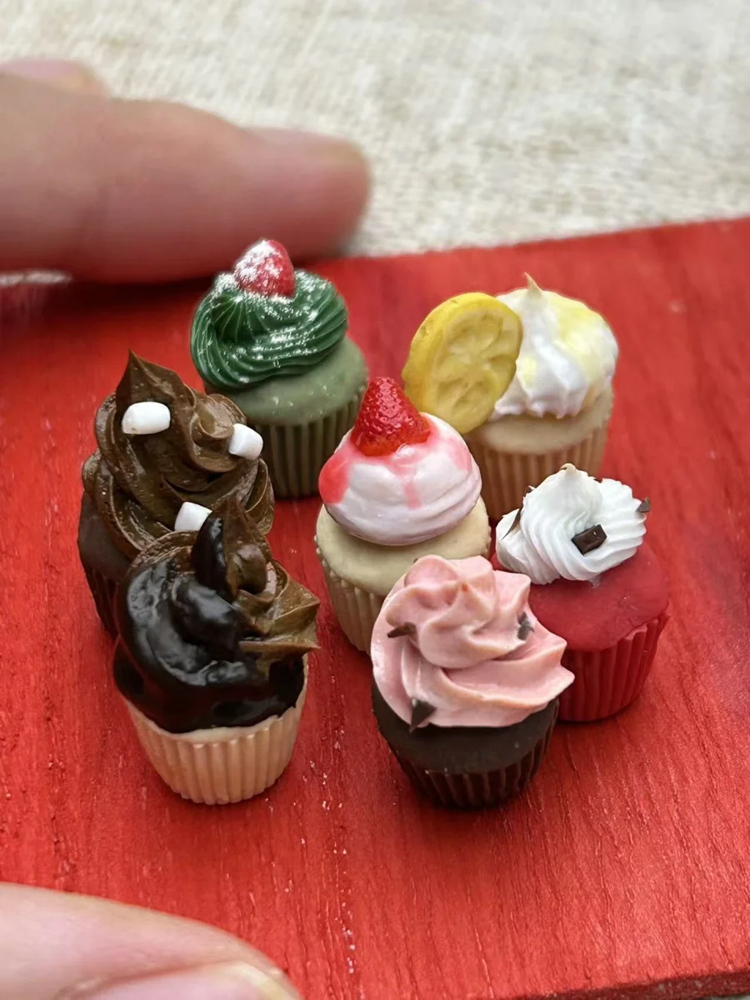
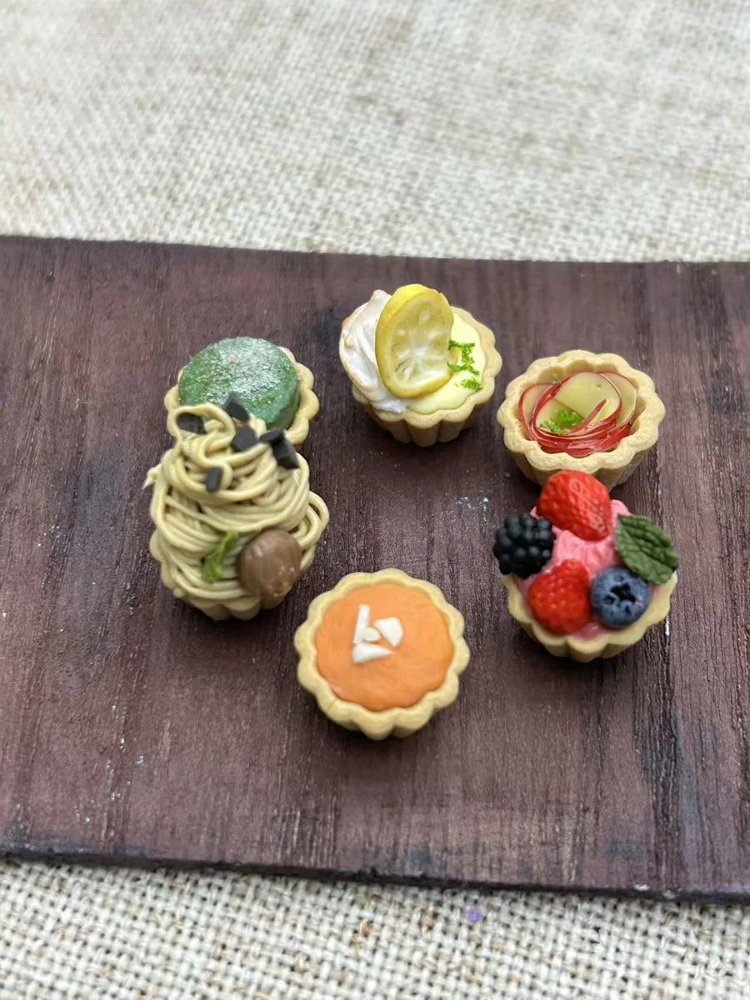
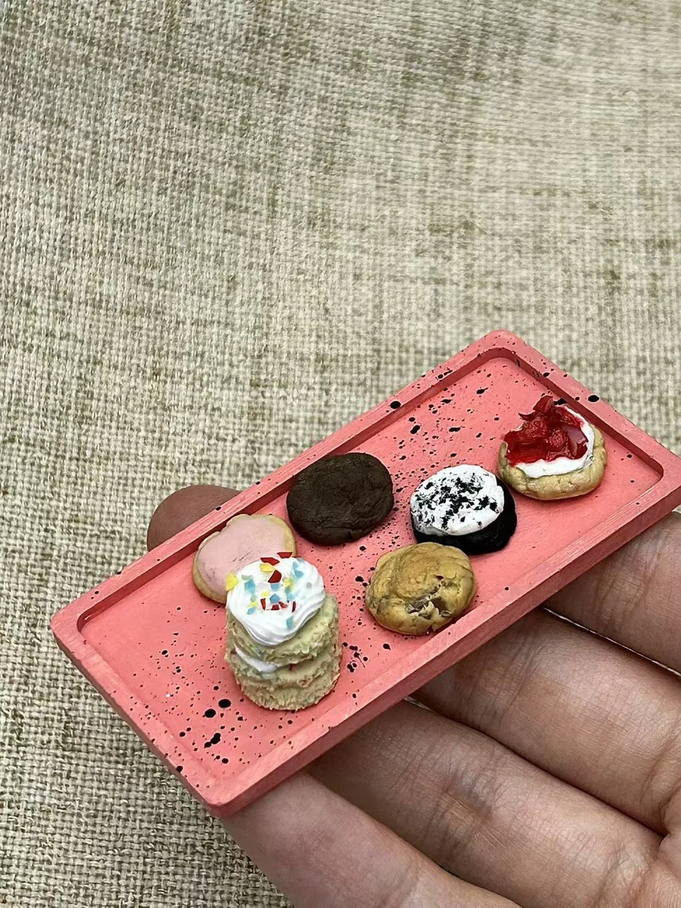

Life — Made by Hand
Away from circuits and code, I create food miniatures from polymer clay and other clays. Each tiny cake, colorful tart, and miniature dish is shaped by hand, with a focus on texture, color, and small details.
One Color per Table
I made this series of miniature dessert tables with polymer clay, UV resin, and resin clay. Each table is built around a single color, from the plates and desserts down to the small details.

Miniature Dessert Scenes




Select a photograph to see the details.
Small Bites & Tiny Details











